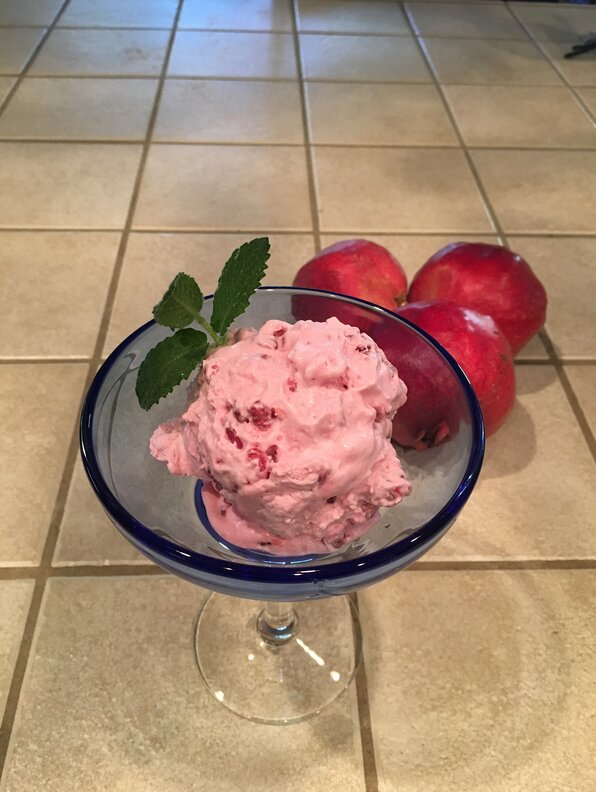

Pomegranate Sorbet Smile

Description
We were looking for a way to use up our seasonal pomegranate produce, and this is it! No cooking, no corn syrup, and the most amazing flavor. We call it Sorbet Smile because we can't stop smiling when we eat it!
Ingridients
- 3 pomegranates
- 1 cup white sugar
- 3 tablespoons freshly squeezed lemon juice
- 3 egg whites
- 2 cups heavy whipping cream
Steps:
- Score pomegranate rinds lengthwise and crosswise with a knife. Carefully crack open with the knife. Break flesh into quarters with your hands, using scored lines as a guide. Hold each quarter over a large bowl and whack firmly with a wooden spoon to release seeds.
- Mash seeds in the bowl with a potato masher to release some juice. Add sugar and lemon juice; continue mashing to release more juice.
- Beat egg whites in a glass, metal, or ceramic bowl with an electric mixer until stiff peaks form. Mash into the pomegranate mixture in the bowl.
- Beat cream in a chilled glass or metal bowl with an electric mixer until thick. Mash into the pomegranate mixture, popping seeds to reach desired consistency.
- Pour mixture into freezer-safe containers. Freeze until firm, about 2 hours.